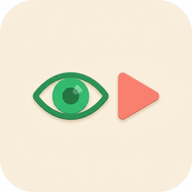

-- cm
Chế độ giả lập khoảng cách: Kéo thanh trượt dưới 35 cm để kiểm tra tính năng tự động Pause YouTube.

Bảo vệ mắt bé khi xem YouTube trên iPad
Giải phép tính nhỏ dưới đây để mở phần cài đặt khoảng cách:
Truy cập đường dẫn trang web này bằng Safari trên iPad, nhấn Bật bảo vệ mắt và chọn Cho phép (Allow) quyền sử dụng Camera.
Nhấn nút Chia sẻ (Share ↑) trên thanh địa chỉ Safari → chọn Thêm vào Màn hình chính (Add to Home Screen) → nhấn Thêm. Từ giờ bé mở icon ScreenGap sẽ không còn thanh địa chỉ trình duyệt.
Vào Cài đặt iPad → Trợ năng (Accessibility) → Truy cập được hướng dẫn (Guided Access) và bật lên + đặt mật khẩu 6 số. Khi đưa iPad cho bé xem trong ScreenGap, bấm 3 lần nút Nguồn để bé không thể vuốt thoát ra mở app YouTube gốc!